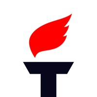
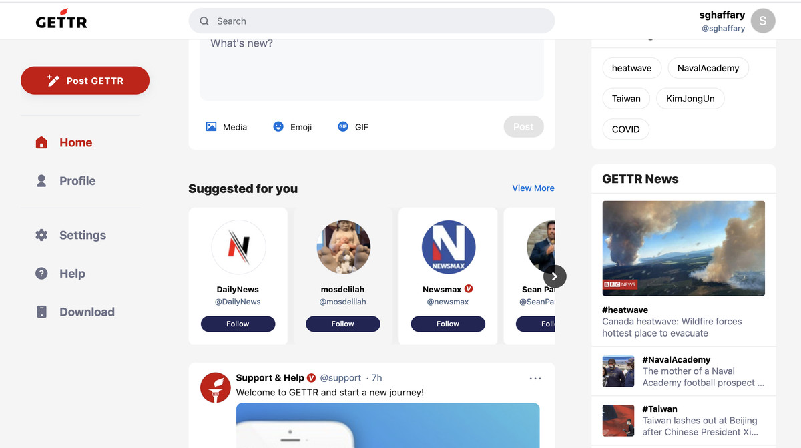

Gettr
https://www.gettr.com/onboarding
1.0.7



Funcionalitats
Se trata de Gettr, que básicamente es Twitter con otros colores, las mismas funciones y una misión clara: ser un lugar donde la gente pueda expresar su opinión sin miedo a represalias. Los usuarios pueden publicar sus mensajes con límite de 777 caracteres, subir fotos o videos y revisar las tendencias que se muestran en una sección especial.
Captures
Financiamiento
Luego de ser vetado de las redes sociales, Donald Trump no iba a quedarse con los brazos cruzados por tal motivo su equipo lanzara su propia plataforma de red social, el exportavoz Steve Bannon es quien dirige la plataforma modificada de Getoma a Gettr. Al parecer existen diferentes instituciones y empresarios que participaron en el financiamiento inicial para su desarrollo entre ellos el magnate chino millonario Guo Wengui.
Companyia
La red social está encabezada por exasesores de Donald Trump, como Jason Miller (antiguo portavoz del expresidente) y Tim Murtaugh (director de campañas).
Alternatives
Valoració
4,5 de 5 En PlayStore
Avantatges
Las principal ventaja de es que Gettr se declara oficialmente como una “plataforma de redes sociales fundada en los principios de libertad de expresión, pensamiento independiente y rechazo de la censura política y a la «cultura de la cancelación». Tambien han vinculado los seguidores de Twitter para que salgan en los perfiles de Gettr.
Inconvenients
El principal inconveniente es que es muy parecido a Twitter, y este al tener gran mercado a Gettr se le va hacer complicado captar a nueva gente.